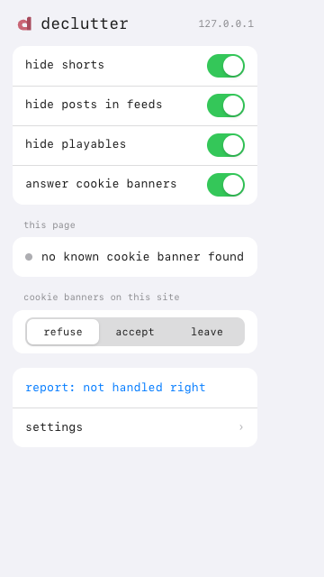
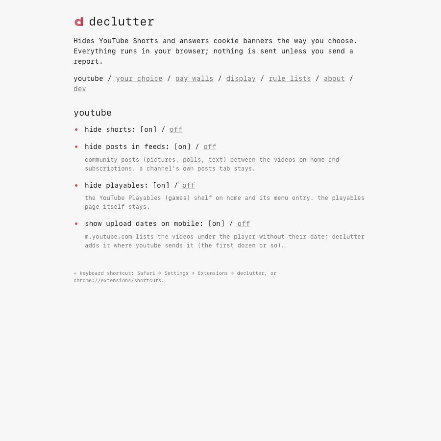
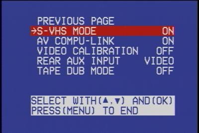
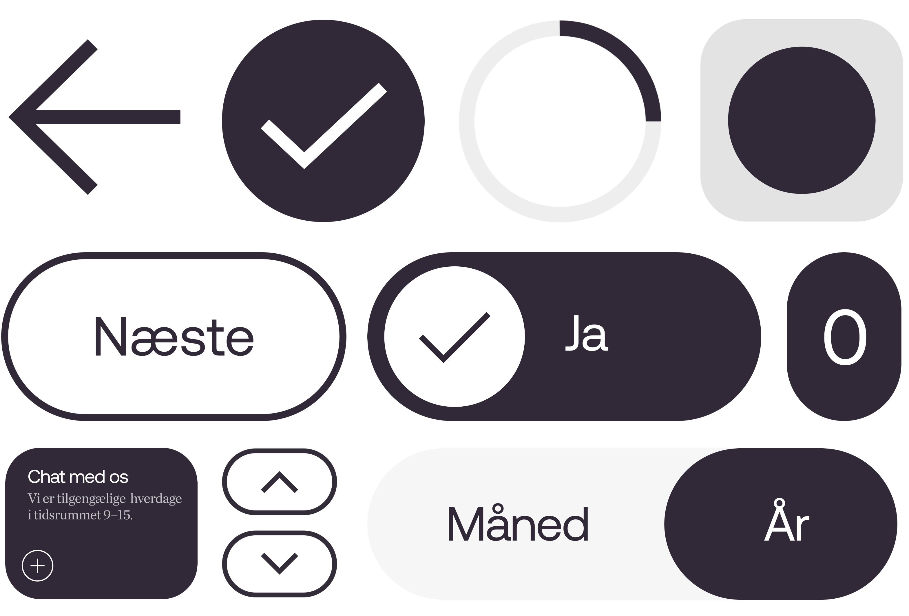
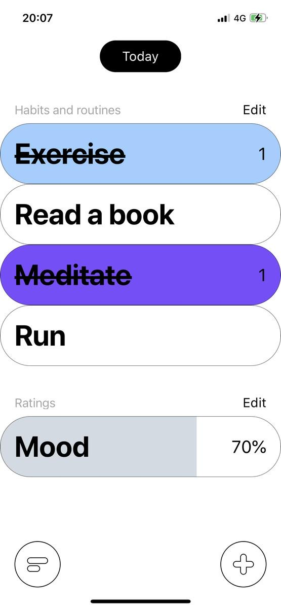
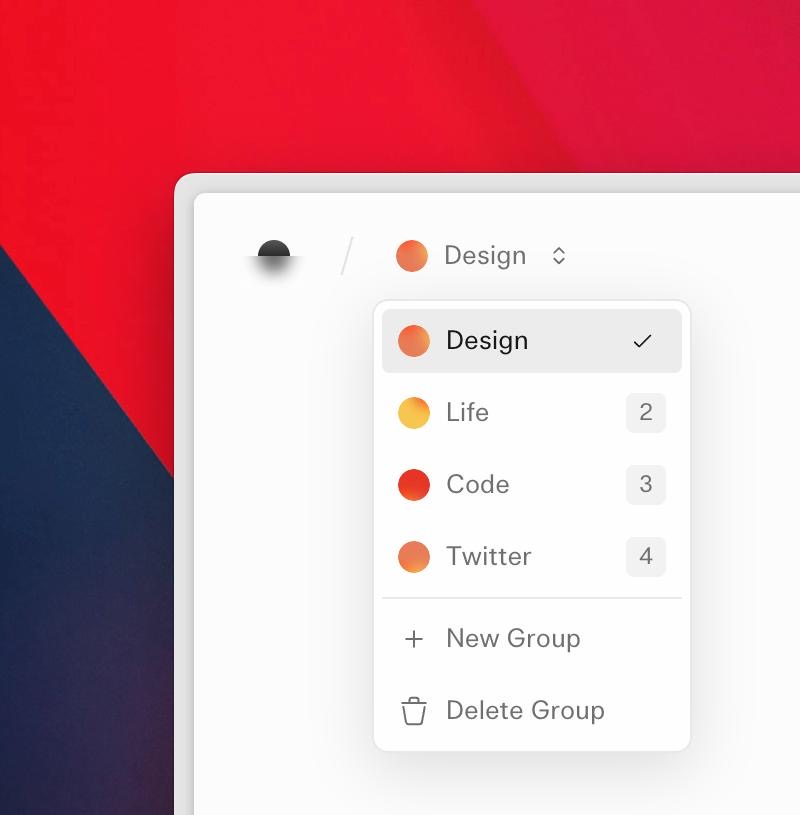
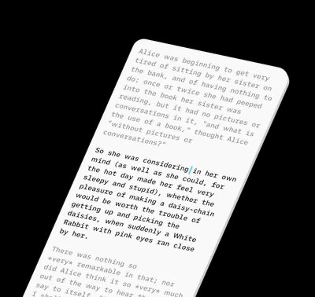
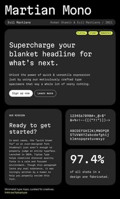

| VHS menu · 19335916 |  | ON/OFF as words in a right column, current row = one solid colour band, no controls, no cards | FAIL — on|off pill per row inside iOS cards |
| B/W pill · 11379889 |  | refuse / accept / leave as two-tone pill, chosen side in ink | PASS for site choice · but also reused on every toggle, displacing VHS |
| Struck-through done · 20770715 |  | the whole handled row struck and filled with colour | PARTIAL — small grey "~~cookie banner~~" prefix only |
| Dot + name + count · 20367516 |  | settings stats as dot / label / number rows | NOT APPLIED (settings untouched) |
| iA Focus Mode · 2092684 |  | dim everything except what matters | PARTIAL — only off rows dimmed; cards, grey bg, coloured dots stay |
| Martian Mono · 31399571 |  | a mono with character, bundled | PARTIAL — bundled, but squeezed to 81% to fit the old layout |